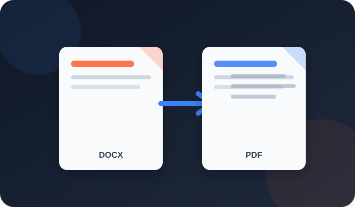

Convert DOCX to PDF with Microsoft Word locally or the full browser office engine on the hosted site.

The local preview sends the DOCX only to the preview server on this computer. Installed Microsoft Word renders it when available; LibreOffice is used as a native fallback. Temporary conversion files are removed after the request.
On the hosted site, the DOCX stays in browser memory and is rendered by a downloaded browser office engine. Microsoft Word remains the reference renderer for DOCX. The result reports the authoritative generated-PDF page count without resizing the document.
Submit assignments, theses, and reports as PDF — most university portals (HEC, COMSATS, LUMS, UET) require PDF format for submissions.
Convert your CV and cover letter to PDF before applying. Job portals like Rozee.pk, LinkedIn, and company HR systems all prefer PDF resumes.
Share contracts, proposals, and reports that cannot be accidentally edited by the recipient. PDF is the standard for formal business communication.
PPSC, FPSC, NTS, NADRA, and most government portals require applications and documents in PDF format with specific file size limits.
Word files (.docx) can be edited by anyone who opens them. This is a risk for CVs, contracts, certificates, and any document where you need the content to stay exactly as you wrote it. PDF files cannot be easily edited without special software. The generated PDF has a fixed page layout, but it may differ from the original DOCX when fonts or complex Word features are unsupported. Preview it before sharing.
Additionally, many portals and email systems only accept PDF. Government job applications, university submissions, visa applications, and most professional document workflows require PDF format. Converting from Word to PDF ensures your documents pass validation checks on these platforms.
The full office engine supports text boxes, floating images, shapes, headers, footers, tables, columns and page settings. Microsoft Word is still the reference renderer, so unavailable fonts, fields, SmartArt, macros or some advanced objects can differ. Inspect the generated PDF before critical use.
The tool is optimised for .docx (Word 2007 and later), which is the standard format today. If you have an older .doc file, open it in Microsoft Word, Google Docs, or LibreOffice and save it as .docx first. This takes 30 seconds and is free.
On the hosted site, conversion runs in browser memory and the DOCX is not sent to an external conversion API. In the local preview, it is sent only to the preview server on the same computer so Microsoft Word or LibreOffice can render it; temporary files are removed afterward.
There is no fixed page limit. Files over 50 MB are rejected and each conversion has a two-minute safety limit.
Yes — this is one of the most common uses. Upload your CV in .docx format, preview it to confirm it looks correct, then download the PDF. Most HR systems and job portals (Rozee.pk, LinkedIn, Indeed) accept and prefer PDF CVs because they display consistently across all devices and cannot be accidentally modified.
No. PDFdukan never adds watermarks, logos, or any branding to your converted PDF. The output is a clean, professional document ready to submit or share.
PDFdukan currently offers this local conversion without a subscription, per-file fee or account.
The hosted browser engine is large and works best in a current desktop Chrome or Edge browser. High-memory phones may work, but complex documents can exceed mobile memory.
The local preview calls Word's own fixed-format PDF export when Word is installed. The hosted site uses a browser office engine instead, so the generated preview must be checked for advanced Word-only features.
Connect Google Drive to save selected outputs to your own Drive storage. Review the destination before uploading sensitive documents.
No account? Sign Up free